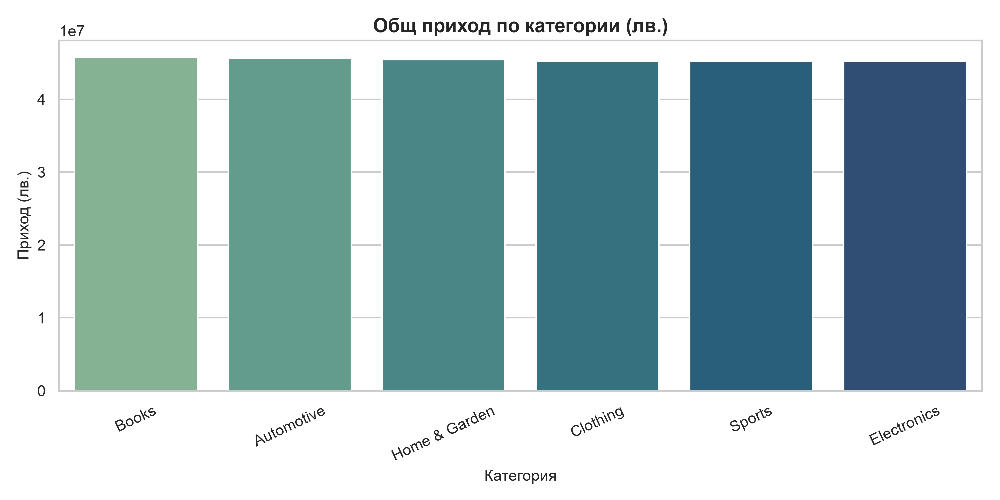
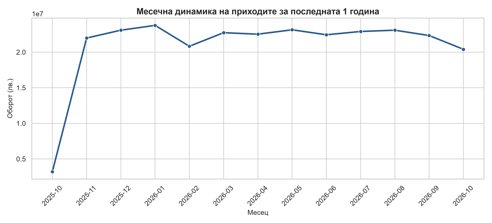
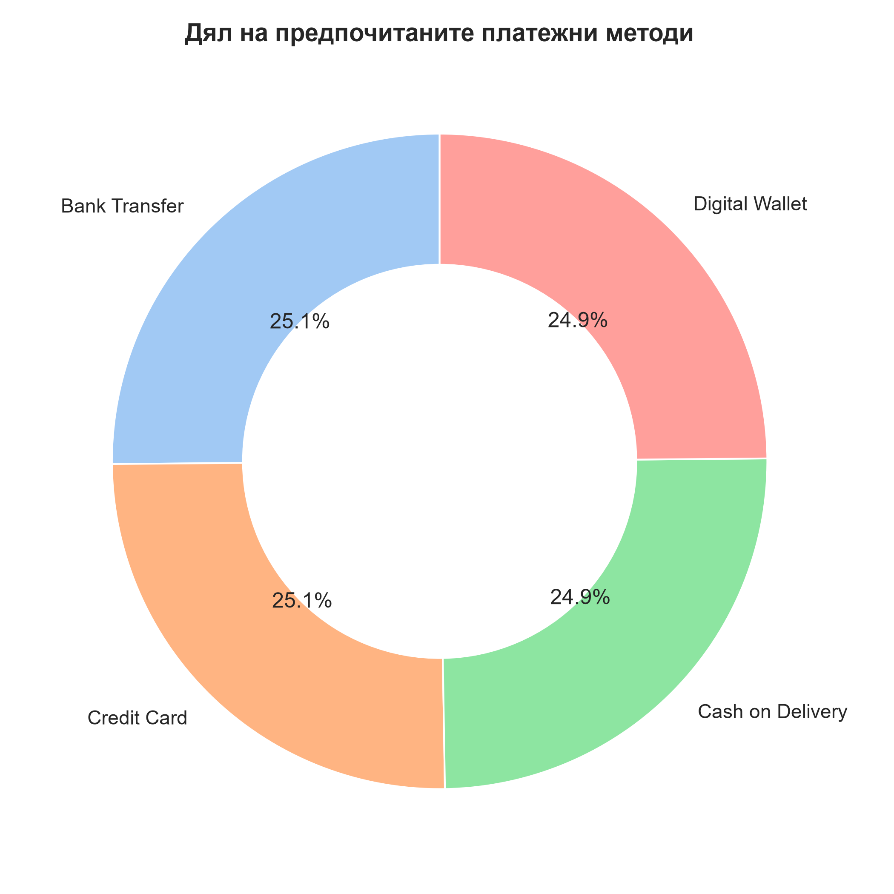
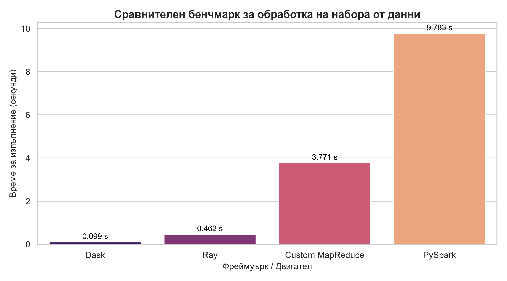

Отчет за Big Data анализ и Hadoop/MapReduce симулация
Общ оборот
272,415,096.56 лв.
1. Hadoop / MapReduce Симулация (Времена по фази)
| Фаза | Време за изпълнение |
|---|
| Partitioning | 0.0007 s |
| Map | 3.7515 s |
| Shuffle | 0.0166 s |
| Reduce | 0.0021 s |
| Total_mr | 3.7710 s |
2. Сравнителен бенчмарк на Big Data фреймуърци
| Фреймуърк / Модул | Време за обработка |
|---|
| Custom MapReduce | 3.7710 s |
| Dask | 0.0994 s |
| Ray | 0.4622 s |
| PySpark | 9.7826 s |
3. Графични визуализации
Приход по категории

Месечен тренд

Методи на плащане

Бенчмарк сравнение

4. Изводи и заключение
- Ефективност на модела: Custom MapReduce имплементацията ясно илюстрира стъпките Partitioning → Map → Shuffle → Reduce, като паралелното разпределение намалява драстично Map времето.
- Сравнение: Dask и Ray се настройват изключително лесно в Python екосистемата и дават отлична скорост за in-memory изчисления. PySpark предоставя цялостната индустриална сигурност на Catalyst и RDD разпределението.
- Интерпретация: Анализът на продажбите идентифицира най-силно представящите се продуктови категории и периоди от годината с пиково натоварване.